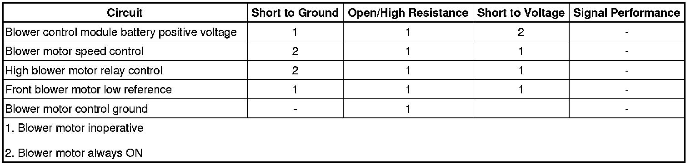

Blower Motor Malfunction
Blower Motor Malfunction
Diagnostic Instructions
* Perform the Diagnostic System Check - Vehicle (Initial Inspection and Diagnostic Overview) prior to using this diagnostic procedure.
* Review Strategy Based Diagnosis (Initial Inspection and Diagnostic Overview) for an overview of the diagnostic approach.
* Diagnostic Procedure Instructions (Initial Inspection and Diagnostic Overview)provides an overview of each diagnostic category.
Diagnostic Fault Information

Circuit/System Description
Blower Controller
The blower control module is an interface between the HVAC control module and the blower motor. The blower motor speed control, battery positive and ground circuits enable the control module to operate. The HVAC control module provides a pulse width modulation (PWM) signal to the blower controller in order to command the blower motor speed. The control processor uses the blower motor ground or low reference as a low side control to adjust the blower motor speed.
Air Speed
The blower motor forces air to circulate within the vehicles interior. The vehicle operator determines the blower motors speed by placing the blower knob dial in a desired speed position or by selecting automatic operation. In manual operation, the blower has 6 speed selections. The HVAC control module may alter the blower motor speed due to compensating factors. In automatic operation, the HVAC control module will determine what blower speed is necessary in order to achieve or maintain a desired temperature. In manual and automatic operation, the blower speed temporarily reduces speed during transition between outlet modes.
Reference Information
Schematic Reference
HVAC Schematics (Electrical Diagrams)
Connector End View Reference
Component Connector End Views (Connector Views)
Description and Operation
Automatic HVAC Description and Operation (Automatic HVAC Description and Operation (Part 1))
Electrical Information Reference
* Circuit Testing (Component Tests and General Diagnostics)
* Connector Repairs (Component Tests and General Diagnostics)
* Testing for Intermittent Conditions and Poor Connections (Component Tests and General Diagnostics)
* Wiring Repairs (Component Tests and General Diagnostics)
Scan Tool Reference
Control Module References (Programming and Relearning)
Circuit/System Verification
1. Ignition ON, switch the Climate Control System to the manual setting. Press the fan speed control button from the lowest to highest setting. The blower motor speed should change between commanded states.
2. Press the power button located on the driver's side of the climate control panel to turn the entire climate control system ON or OFF. The blower motor should turn OFF.
Circuit/System Testing
1. Ignition OFF, disconnect the BLOWER relay.
2. Ignition ON, verify that a test lamp does not illuminate between the B+ circuit terminal R32 and ground.
• If the test lamp illuminates, test the B+ circuit for a short to voltage.
3. Verify that a test lamp illuminates between the B+ circuit terminal R30 and ground.
• If the test lamp does not illuminate, test the B+ circuit for a short to ground or an open/high resistance.
4. Verify that a test lamp illuminates between the B+ circuit terminal R29 and ground.
• If the test lamp does not illuminate, test the B+ circuit for a short to ground or an open/high resistance. If the circuit tests normal and the BLOWER fuse is open, test the B+ circuit for a short to ground. If the circuit tests normal, replace the blower controller.
5. Connect a test lamp between the control circuit 754 and the B+.
6. Command the blower motor ON and OFF. The test lamp should turn ON and OFF when changing between the commanded states.
• If the test lamp is always OFF, test the control circuit for a short to voltage or an open/high resistance. If the circuit tests normal, replace the HVAC control module.
• If test lamp is always ON, test for short to ground. If circuit tests normal, replace the blower controller.
7. Connect the BLOWER relay.
8. Disconnect the harness connector at the blower controller.
9. Test for less than 1 ohm of resistance between the ground circuit terminal 5 and ground.
• If not the specified range, test the ground circuit for an open/high resistance.
10. Connect a test lamp between the B+ circuit terminal 6 and ground.
11. Turn ON the blower motor. Verify the test lamp illuminates
• If the test lamp does not illuminate, test the B+ circuit for an open/high resistance. If the circuit tests normal, test or replace the BLOWER relay.
12. Install a test lamp between the control circuit terminal 3 and B+.
13. Turn the blower motor ON and cycle between low and high speeds. The test lamp should dimly illuminate at high speeds and reduce in intensity as the blower speed is reduced.
• If the test lamp does not illuminate, test the control circuit for short to voltage or an open/high resistance. If the circuits test normal, test or replace the HVAC control module.
• If the test lamp does not change intensity, test the control circuit for a short to ground. If the circuit tests normal, test or replace the HVAC control module.
14. Connect the harness connector at the blower controller.
15. Disconnect the harness connector at the blower motor.
16. Install at test lamp between the B+ circuit terminal 1 and ground.
17. Turn ON the blower motor. Verify the test lamp illuminates.
• If the test lamp does not illuminate, test the B+ circuit for an open/high resistance.
18. Install a test lamp between the control circuit terminal 1 and the low reference circuit terminal 2.
19. Turn the blower motor ON and cycle between low and high speeds. The test lamp should illuminate and change in intensity as the blower speed is varied.
• If the test lamp does not illuminate, test the low reference circuit for short to voltage or an open/high resistance. If the circuit tests normal, test or replace the blower controller.
• If the test lamp does not change intensity, test the low reference circuit for a short to ground. If the circuit tests normal, test or replace the blower controller.
20. If all circuits test normal, replace the blower motor.
Component Testing
FRT HVAC BLWR Relay
1. Ignition OFF, disconnect the BLOWER relay.
2. Test for 60-180 ohms of resistance between terminals 85 and 86.
• If the resistance is not within the specified range, replace the relay.
3. Test for infinite resistance between the following terminals:
* 30 and 86
* 30 and 87
* 30 and 85
* 85 and 87
• If not the specified value, replace the relay.
4. Test for less than 2 ohms of resistance between terminals 30 and 87A.
• If greater than the specified range, replace the relay.
5. Install a 40-amp fused jumper wire between relay terminal 85 and 12 volts. Install a jumper wire between relay terminal 86 and ground. Test for less than 2 ohms of resistance between terminals 30 and 87.
• If greater than the specified range, replace the relay.
Blower Motor
1. Ignition OFF, disconnect the harness at the blower motor.
2. Install a 40-amp fused jumper wire between circuit terminal 1 and 12 volts. Install a jumper wire between the low reference circuit terminal 2 and ground. Verify the blower motor activates.
• If the blower motor does not activate, replace the blower motor.
Repair Instructions
Perform the Diagnostic Repair Verification (Verification Tests) after completing the diagnostic procedure.
* Blower Motor Replacement (Left Hand Drive) (Blower Motor Replacement (Left Hand Drive))Blower Motor Replacement (Right Hand Drive) (Blower Motor Replacement (Right Hand Drive))
* Control Module References (Programming and Relearning)for blower controller and HVAC control module replacement, setup, and programming